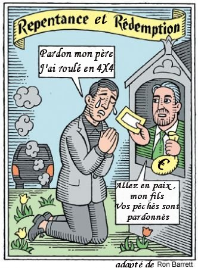
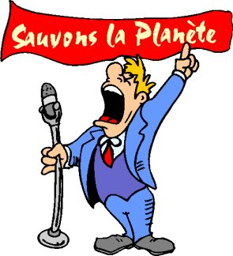
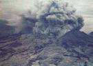
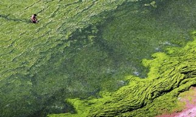

Réchauffement climatique : les remèdes risquent d'être bien pires que le mal.

Pour beaucoup, hélas, le débat scientifique est clos. "The debate is over" comme l'a dit Schwartzenegger (comment peut-il juger ?):" L'effet de serre du CO2 est le grand coupable. La terre va continuer à se réchauffer et l'humanité va disparaître affirment certains...Le GIEC affirme être certain à 90% (Very likely) de ses projections sur ordinateurs et que l'activité humaine est responsable de tout". Bref, selon eux, c'est le consensus.
Alors qu'il n'en est rien, que le débat scientifique se poursuit et que l'on est encore sûr de rien du tout, comme vous le savez si vous avez bien lu ceci ou cela. D'ailleurs, et entre nous, si le GIEC était certain de ses projections sur ordinateur, il ne donnerait pas une probabilité de 90% mais bien de 100%.
Hélas, pendant ce temps, certains savants constatant l'inertie des gouvernements devant de tels avertissements et se doutant aussi que les protocoles comme celui de Kyoto n'apporteront rien de nouveau au climat de la planète, font des propositions qui devraient sérieusement refroidir l'enthousiasme de nos écologistes alarmistes. A force de crier au loup, les événements se retournent contre eux.
C'est en constatant le bourgeonnement de ces idées dont certaines pourraient s'avérer encore plus funestes pour la planète que le réchauffement climatique que j'ai décidé d'ouvrir cette rubrique qui risque, hélas, de s'étoffer au cours des mois et des années à venir ...Tant est prolifique l'imagination de certains apprentis sorciers alors que l'on ignore encore tant de choses sur les processus qui déterminent réellement le climat de la planète.
Qu'en est-il exactement et quelles sont les chances réelles que ces projets très hasardeux aboutissent un jour ? Hélas, elles sont grandes. Elles sont "Very likely", dirait le GIEC. D'ailleurs les anglophones ont baptisé ce nouveau champ de recherches dont certaines font froid dans le dos, du nom de "geo-engineering" en anglais.
Nous le savons tous, la planète (hormis l'Afrique et le Moyen Orient, malheureusement) est en plein développement économique et industriel. Tout le monde connaît l'extraordinaire boum économique de la Chine et de l'Inde qui représentent à elles deux, environ, 3 milliards d'êtres humains, c'est à dire la moitié de la population mondiale. De fait, vouloir autoritairement réduire ou annihiler les émissions de gaz à effet de serre alors que la moitié de la planète est en plein développement économique est passablement illusoire. Les gouvernements et notamment ceux des pays développés de l'Atlantique Nord, doivent ressentir une grande réticence à mettre la pédale douce sur le développement industriel alors que s'ouvrent devant eux des marchés et des échanges à la dimension du globe. Et il est exact que ceux qui se risqueraient à freiner leur développement économique et industriel en ce moment prendrait du retard à un moment crucial de la compétition mondiale. Que l'on aime ou pas, c'est ainsi.
C'est malheureusement pour cette raison que les gouvernements des pays développés risquent de prêter une oreille attentive aux projets les plus fous qui leur permettraient de garder la face en "sauvant la planète".
Et, dit-on, certains le font déjà. Alors, quels sont ces projets dont certains sont soutenus par des sommités scientifiques, (ce qui ajoute à leur crédibilité) ? Pour l'instant, en février 2007, et hormis le simple ré-enfouissement du CO2 dont parlent certains pays de l'Ouest, il en existe trois ou quatre avérées qui relèvent donc de la "geo-ingénierie" . Les voici :
Répandre d'énormes quantités de dérivés sulfurés dans l'atmosphère (voir ici)
L'idée sur laquelle repose ce projet vient des observations qui ont été effectués pendant l'explosion du volcan Pinatubo en 1991. Il faut que je vous en dise quelques mots.
Le Pinatubo est un volcan de l'île de Luçon dans les Philippines. Il s'était endormi jusqu'en mars-avril 1991. Il s'est assez brusquement réveillé en produisant une des éruptions les plus massives de l'histoire moderne avec celle du Krakatoa en 1883. (Voir Wikipedia à ce sujet, très bien fait). Cette éruption dura environ deux mois. Pour ce qui nous intéresse ici, c'est à dire les conséquences sur le climat de la planète, voici quelques chiffres :
Rassurons nous. Tout cela est rentré à peu près dans l'ordre depuis lors...La couche d'ozone s'est reformée spontanément, les aérosols ont été dissipés et le climat de la planète est rentré dans l'ordre naturel, environ 3 ans après.
Cet exemple récent de refroidissement (partiel) de la planète par un phénomène naturel a donné des idées à certains et notamment au professeur Paul Crutzen, lauréat du prix Nobel et travaillant au célèbre Institut Max Planck en Allemagne. Paul Crutzen est aussi rattaché à la Scripps Institution of Oceanography, de l'Université de Californie à San Diego qui est un des berceaux de la théorie du réchauffement climatique anthropogénique. Ce dernier propose donc rien moins que d'ensemencer artificiellement l'atmosphère terrestre avec du dioxyde de soufre (SO2). Nul doute que l'expérience fonctionnera puisqu'elle l'a déjà fait et que notre climat refroidira d'environ 0,5°C pendant deux à trois ans environ. Le professeur Crutzen propose d'utiliser pour cela, l'artillerie et des ballons convenablement chargés. Cela coûtera évidemment très cher : imaginez 15 millions de tonnes de SO2 dans l'atmosphère entre 10 et 50 km d'altitude. Mais après les estimations catastrophiques de Sir Stern, on n'est plus à cela près, n'est ce pas ?
Beaucoup hésitent à adhérer à cette proposition qui fait -il faut le dire- assez apprenti sorcier. Compte tenu des nombreuses inconnues sur les mécanismes qui régissent le climat de la planète, cette "solution" risque de faire plus de mal que de bien. En effet, et faute d'en savoir assez sur le climat, quels sont les risques prévisibles ? Pour l'imaginer, on peut se baser sur ce qui a suivi l'explosion du Pinatubo :
Le moins que l'on puisse en dire c'est qu'une telle expérience est hasardeuse. Quelles seront les retombées, cette fois-ci sur le climat, sur la biosphère (les deux sont liés), on n'en sait rien. Cela risque d'être bien pire que le réchauffement climatique progressif auquel on aura tout le temps de s'adapter... s'il se produit vraiment. Je me demande ce qu'en pensent les écologistes, Nicolas Hulot,Sir Stern ou Al Gore, qui ne cessent de tirer la sonnette d'alarme. C'est bien cela qu'il veulent ?
Répandre d'énormes quantités de fer dans les océans
On sait, par des expériences précédentes, effectuées dans l'océan pacifique, que le fer favorise la croissance accélérée et la multiplication des phytoplanctons dans les océans, lesquels absorbent le CO2 excédentaire sans rechigner tout en rejetant de l'oxygène. Cependant les inconnues sont encore si grandes en matière de comportement des plancton vis à vis du CO2 que personne n'est capable de prévoir ce qui se passera, ni même si cela ne provoquera pas un relâchement du CO2 dans l'atmosphère voire du N2O (encore pire que le CO2.) obtenu par dégradation bactérienne, ce qui serait exactement contraire au but recherché par les partisans de l'effet de serre. Voyez d'ailleurs, au sujet du comportement assez étonnant des planctons, les derniers résultats de la recherche ici et ici.
Pourtant et malgré toutes ces nombreuses inconnues dont les conséquences peuvent être catastrophiques, certains persistent à proposer cette solution pour lutter contre le réchauffement climatique dû au CO2, inéluctable, selon eux. Comme, par exemple, l’océanographe Kenneth Coale, directeur du Moss Landing Marine Laboratories à Monterey en Californie. Ne croyez pas qu'il s'agit de projets en l'air: Après quelques essais localisés, les organismes "compétents" se rassemblent pour prendre des mesures plus globales en ce moment même (sept 2007). Voyez ici.
Alors Mmes et Mrs les alarmistes qui ne cessez de sonner le tocsin, c'est bien à cela que vous voulez en arriver ? Jouer avec les biota des océans avec des conséquences imprévisibles pour la faune et la flore marines ? Cela m'étonnerait.
Une autre retombée très pernicieuse de l'hystérie climatique actuelle concerne la déforestation échevelée dont plusieurs pays se font désormais une spécialité. C'est ainsi qu'un article récent du "Guardian (4 avril 07)" nous informe que l'indonésie et la Malaisie ont projeté de remplacer 98% en 15 ans, de leurs forêts naturelles par des plantations de palmiers destinées à approvisionner le marché en "biofuels" (caburants biologiques, comme l'éthanol). Un tel comportement entraînera une véritable catastrophe écologique. En effet, ces forêts exotiques sont peuplées de nombreuses espèces en voie de disparition, comme les tigres par exemple. Sans compter les espèces arborescentes rares qui vont ainsi disparaître au profit des nouveaux grands groupes internationaux qui se reconvertissent aux biofuels et vont planter des palmiers. Ainsi l'Union Européenne qui vient de promulguer un réglement visant à réduire ses émissions de CO2 de 20% en 2020 et qui est incapable de mobiliser suffisamment de terres pour produire le biofuel, va devenir un énorme client potentiel de ces huiles de palmes pour 10% de ses véhicules toujours en 2020. Quel sera le prix écologique de ce revirement vers les carburants biologiques ? Enorme, sans aucun doute et sans aucune proportion avec les dégats causés par une élévation potentielle de la température dont nous ne sommes absolument pas certains. Je suis certain que le grand expert Sir Nicholas Stern n'avait pas pensé à cela.
Encore une retombée dramatique au plan économique et humain, cette fois-ci, de l'hystérie climatique actuelle. Cette fois-ci, il s'agit du bouleversement des marchés mondiaux des plantes alimentaires produites par les pays en voie de développement. Prenons l'exemple du maïs qui est produit en grande quantité par des pays comme les Etats-Unis. La conversion de la moitié du maïs américain en biofuel a provoqué une hausse immédiate du prix du maïs dans l'ensemble des états américains et, par voie de conséquence, au plan mondial. En effet, la partie consommable pour l'alimentation devient rare et donc chère. Le Brésil, par exemple, est en voie de transformation de son agriculture, autrefois tournée vers l'alimentation pour désormais produire du biofuel pour les pays développés. Comme nous en avertissent les experts comme le prix Nobel Borlaugh, cela risque de provoquer une paupérisation et la famine dans certains pays en voie de développement dans lesquels le maïs sert à l'alimentation humaine et animale (les cheptels). Lester Brown qui est un expert sur ces questions affirme que le grain nécessaire pour produire le biofuel d'un réservoir de voiture de 100 litres, équivaut à la nourriture d'une personne pendant un an.
Autrement dit, la volonté des Etats-Unis et d'autres états de l'hémisphère nord de se dégager de leur dépendance vis à vis du pétrole du moyen orient risque de paupériser et d'entraîner dans le gouffre de nombreux pays en voie de développement.
Il faut bien réfléchir à ces questions avant de se lancer dans une course effrénée à la fabrication des carburants biologiques. Nos avons largement pompé dans des réserves naturelles de pétrole qui avaient au moins le grand mérite d'être impropre à l'alimentation humaine et animale. Nous voici donc à l'orée d'une époque où il faudra choisir ou trouver un équilibre précaire entre l'alimentation et les transports. Qui va continuer à rouler en voiture ? : les pays développés. Qui va souffrir de la famine ? : les pays pauvres.Terrible dilemne, n'est-ce pas ?
Et voici, en janvier 2008, pour preuve de ce que j'avance, les premiers troubles annonciateurs de futures malnutritions en Indonésie à cause des fameux "biofuels" ici .
Enfin. En ce début février 2008, les scientifique se réveillent pour dénoncer les horreurs du biofuel.
Voir l'article du New York Times ici suite à un article pari dans Science. Mieux vaut tard que jamais ... et si possible avant qu'on ait fait trop de dégats...
Septembre 2007 : James Lovelock (le promoteur de "la théorie Gaïa " (voir ici)) et son co-auteur Chris Rappley du Science Museum (GB) ont récemment proposé (lettre à Nature) une nouvelle solution qui pourrait selon eux et selon la société Atmocean, chargée d'étudier et de mettre en application un projet similaire, aider à absorber dans les océans environ 30% des émissions anthropogéniques de CO2. A noter que James Lovelock, après ses prédictions apocalyptiques, vient de déclarer, fort opportunément, que rien n'était perdu et qu'il y avait des solutions pour "sauver la planète". Voici l'idée qui tombe à pic pour ne pas se retrouver avec quelques couples d'humains reproducteurs, sur un bloc de glace (selon les prédictions même de James Lovelock):
On enfonce dans la mer un très grand nombre (134 millions.) de tuyaux verticaux en plastique de 200m de longueur, dont l'extrémité est maintenue en surface à l'aide de bouées. Ce faisant, on pense faire remonter en surface les eaux plus froides et plus riches en nutriments des nappes inférieures des océans. Cela permettrait, pensent les auteurs du projet, d'aider au développement d'algues marines et autres organismes capables d'absorber une partie du CO2 atmosphérique. Sans compter que ces micro algues ou ces planctons seraient susceptibles de produire du sulfure de diméthyle apte à d'ensemencer des nuages parasols, comme cela est expliqué ici.
La physique élémentaire nous apprend qu'en l'absence de pompes placées sur chaque tube, (ce qui serait hors de prix), et du fait que l'énergie est fournie par la houle, il faudra prévoir un système anti-retour efficace pour que les eaux froides ne redescendent pas spontanément dans les tubes. C'est à dire un système de valve sur chaque tuyau. Bref, ça ne vas pas être facile...A noter que certains avaient proposé une solution identique, il y a une cinquantaine d'années pour contrecarrer les effets du fameux petit "âge glaciaire" que les mêmes nous avaient promis dans les années 1940-1978. Le but était alors de faire fondre les glaces surfaciques qui pourraient bloquer les accès aux côtes...
Dans cette nouvelle hypothèse comme dans les précédentes, on ignore tout des conséquences sur les biotas et les équilibres océaniques de l'introduction de quelques 134 millions de tubes métalliques dans les océans et de la remontée artificielle des eaux froids en surface (acidification ?). Mais c'est une idée assez curieuse qui devrait rappeler aux alarmistes écologistes que les solutions à l'excédent de CO2 anthropogénique pourraient fort bien se passer des limitations de consommation qu'ils recherchent à cor et à cris et nous conduire, finalement, à des solutions aux conséquences imprévisibles.
1er Sept. 2008 : Appel de plusieurs experts auprès de la Royal Society (UK) pour développer le Géo-Ingénierie, c'est à dire, en l'occurence, la modification délibérée du climat de la planète.
"Des actions risquées et extrêmes sont la seule façon de maîtriser le réchauffement climatique", affirment ces chercheurs
Les textes qui suivent sont extraits d'un article du célèbre journal UK, The Guardian (source) qui, avec The Independent, est à la pointe de l'alarmisme climatique au Royaume Uni. Leurs affirmations apocalyptiques sont heureusement contrebalancées par celles, plus rationnelles, du Telegraph et du Financial Times. Au moins, les anglais sont-ils informés des deux côtés de la balance, ce qui n'est pas le cas dans d'autres pays comme la France...
"Les experts disent que la réluctance, à tous les niveaux, de s'occuper des émissions croissantes de gaz à effet de serre signifie que le taux de CO2 dans l'atmosphère est en route pour atteindre la valeur de 650 ppm, ce qui pourrait conduire à une augmentation de la température de 4°C.
Ils en appellent à plus de recherche sur les options de géo-ingénierie pour refroidir la terre, telles que le déversement d'énorme quantités de fer dans les océans pour augmenter la croissance des planctons et l'ensemencement de nuages artificiels pour renvoyer la lumière solaire dans l'espace"
En écrivant l'introduction d'une collection d'articles scientifiques dédiés à ce problème qui seront publiés aujourd'hui par la Royal Society, Brian Launder de l'Université de Manchester et Michael Thomson de l'Université de Cambridge déclarent :" Bien que de telles interventions à l'échelle de la planète soient risquées, le temps peut venir où elles seront acceptées parce ce qu'elles sembleront moins risquées que de ne rien faire."
ci-contre une image montrant l'amoncellement des algues sur une côte marine. Une des idées en vogue consiste à provoquer une croissance massive de ces biota parce qu'elles absorbent le CO2.
Le professeur Launder, un ingénieur mécanicien, a dit au Guardian que "Les taux de carbone ne vont pas dans le bon sens et nous devons chercher d'autres options, telles que la géo-ingénierie, pour nous donner le temps que le Monde reprenne ses esprits." Et il ajoute : " C'est comme si nous disions que nous voulons stopper la deuxième guerre mondiale sans avoir fait de recherches pour développer la bombe atomique." (NDLR : Belle image qui fait immédiatement penser au Dr Folamour)
Le journal poursuit :
"L'année dernière, le GIEC a écarté la géo-ingénerie parce qu'elle est "largement spéculative et non prouvée et quelle comporte le risque d'effets collatéraux inconnus."
Après quelques rappels relatifs à l'apocalypse qui nous attend si nous ne faisons rien et une allusion au fameux rapport Stern (dont on connaît les compétences en la matière puisqu'il a repris les "données" d'Al Gore), Le Guardian nous informe que, (comme tous les écologistes), Mike Child des Amis de la Terre, est vigoureusement opposé à cette idée de géo-ingénierie. Non pas parce que ces techniques ouvrent une voie dangereuse de recherche, mais parce que la solution est déjà toute trouvée (pour eux): Les éoliennes, l'énergie marée-motrice et l'énergie solaire... comme d'habitude et même si elles sont de plusieurs ordres de grandeur insuffisantes et inadaptées.. Et, évidemment, surtout pas de nucléaire, pas de charbon, pas de gaz et pas de pétrole.
Deux remarques sur cet "appel" des "géo-ingénieurs" en herbe :
-Comme je l'ai écrit ci-dessus, des essais à petite échelle ont déjà été tentés, d'autres à plus grande échelle (comme le Pinatubo, si l'on peut dire). Les dangers de ce genre de pratique sont considérables et les résultats imprévisibles. Le résultat de ces expériences n'a pas répondu aux attentes et on a vu se produire des choses bien curieuses ...
-Il serait naïf de penser que tous ces gens qui font dans l'ingénierie ne caressent pas l'idée de participer, eux aussi, au gigantesque festin budgétaire dont se gobergent déjà les climatologues. Le budget consacré à la recherche climatologique et dérivés se chiffre en dizaines de milliards d'euros et de dollars (au détriment des autres sciences, bien entendu). Pourquoi ne pas en prélever une petite partie ? La tentation est forte pour les gens qui travaillent dans ces disciplines techniques et qui doivent se retrouver à la portion congrue... comme toutes les autres sciences.
Pour pouvoir "participer", une seule voie possible, celle qui a déjà réussi aux climatologues : Créer la panique chez ses contemporains en affirmant que, de toute façon, il n'y a plus rien à faire et qu'ils seront l'ultime recours pour sauver la planète.
Et le plus étonnant (pour rester gentleman) c'est que la Royal Society Anglaise se prête à ce genre de manoeuvres. Ah, décidément, elle ne s'est pas améliorée la Royal Society depuis ses exploits, en 1802, au détriment de notre brave William Herschell.
De manière générale, on crois rêver devant l'imagination fertile de nos sauveurs de la planète dont certains ont déjà l'écoute de nombreux dirigeants de notre pauvre globe terrestre et, sans doute, les crédits qui vont avec!
Et si le CO2 n'y était pour rien ? Ne ferait-on pas mieux de dépenser les sommes colossales destinées à ces expériences aussi dangereuses que coûteuses pour venir en aide à ceux qui souffrent des maladies et de la famine ? A ces pauvres bébés africains au ventre gonflé par les privations et le manque d'hygiène ?
Conclusions :
De manière générale :
"Il est des recherches (notamment sur la modification du climat) qu'il vaudrait mieux ne pas entreprendre".
Alors Mmes et Mrs les écologistes, Mrs Hulot, Al Gore, Stern, les rédacteurs du Summary for Policymakers du GIEC etc., vous jouez avec le feu. Vous avez ouvert la boite de Pandore.
Avez vous bien réfléchi aux conséquences possibles ou probables, avant d'entreprendre vos campagnes médiatiques pour "sauver la planète" ?
Avez vous soigneusement pesé que vos déclarations péremptoires risquaient de relancer de nouveaux processus de recherche sur la modification du climat aux conséquences incalculables. Avez vous réalisé que vous risquiez de bouleverser les fragiles équilibres économiques de la planète au détriment des plus pauvres ?
: Non, sans doute.
...
Il serait peut-être temps d'y réfléchir sérieusement. S'il n'est pas déjà trop tard.
En Fév. 2009, Kevin Trenberth (source Physics Today) soulève, comme moi, la question épineuse et dangereuse du choix de la "bonne" température que l'on pourrait imposer par Géoingénierie.